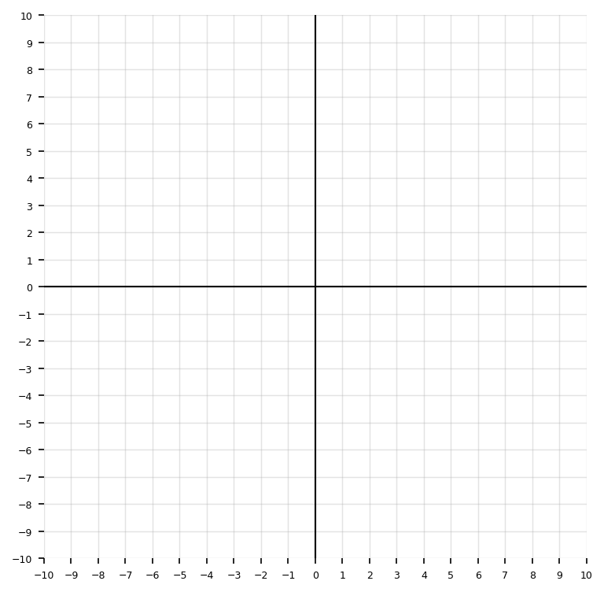

Unit A Section A.1: Transformations and Vertex Form of Quadratics
Teacher Question Bank
Identify the vertex of each quadratic.
\(y=(x-3)^2+5\)
\(y=(x+4)^2-2\)
\(y=-2(x-1)^2+7\)
For each function, state whether the parabola opens up or down.
\(y=3(x-2)^2+1\)
\(y=-\frac12(x+5)^2-4\)
\(y=(x+1)^2\)
\(y=-4x^2+6\)
State the axis of symmetry of each quadratic.
\(y=(x-6)^2-1\)
\(y=2(x+3)^2+4\)
\(y=-5(x-9)^2\)
Identify the values of \(a\), \(h\), and \(k\) for each function written in the form \(y=a(x-h)^2+k\).
\(y=4(x-2)^2+7\)
\(y=-3(x+5)^2-1\)
\(y=\frac12(x-8)^2\)
Match each function to its transformation from \(y=x^2\).
\(y=(x-4)^2\)
\(y=x^2+6\)
\(y=-x^2\)
\(y=3x^2\)
Transformations:
reflection over the \(x\)-axis
shift right 4
vertical stretch by a factor of 3
shift up 6
State whether each graph is wider, narrower, or the same width as \(y=x^2\).
\(y=5x^2\)
\(y=\frac14x^2\)
\(y=-x^2\)
\(y=-\frac23x^2\)
For each function, identify the vertex and whether the vertex represents a maximum or minimum.
\(y=(x+2)^2-9\)
\(y=-3(x-1)^2+8\)
\(y=\frac12(x-5)^2+4\)
Fill in the blanks.
For \(y=2(x-7)^2-3\), the graph is shifted ______ units right, ______ units down, stretched by a factor of ______, and opens ______.
Which equation has vertex \((-4,6)\)? Explain how you know.
\(y=(x-4)^2+6\)
\(y=(x+4)^2+6\)
\(y=(x+6)^2-4\)
\(y=(x-6)^2-4\)
Which equation represents a parabola with axis of symmetry \(x=3\)?
\(y=(x+3)^2-1\)
\(y=(x-3)^2+2\)
\(y=3(x+1)^2\)
\(y=x^2-3\)
Describe the transformation from \(y=x^2\) to \(y=-(x+1)^2+4\). Use the words shift, reflect, and vertex in your answer.
A quadratic function has vertex \((2,-5)\), opens upward, and has no vertical stretch or compression. Write its equation in vertex form.
Graph \(y=(x-2)^2+1\). Then identify:
vertex
axis of symmetry
domain
range
minimum value

Graph \(y=-2(x+1)^2+3\). Then identify:
vertex
axis of symmetry
domain
range
maximum value

Complete the table for \(y=(x-3)^2-2\). Then use the table to graph the function.
| \(x\) | 1 | 2 | 3 | 4 | 5 |
|---|---|---|---|---|---|
| \(y\) |
Complete the table for \(y=-\frac12(x+2)^2+4\). Then identify the maximum value.
| \(x\) | -4 | -3 | -2 | -1 | 0 |
|---|---|---|---|---|---|
| \(y\) |
Graph both functions on the same coordinate grid.
\[f(x)=x^2\]
\[g(x)=(x-4)^2-3\]
Then describe how the graph of \(g(x)\) compares to the graph of \(f(x)\).

Graph both functions on the same coordinate grid.
\[f(x)=x^2\]
\[g(x)=-2x^2+1\]
Then describe the effect of the negative sign, the coefficient \(2\), and the \(+1\).

Write a quadratic equation in vertex form with:
vertex \((5,-2)\)
opens downward
vertical stretch factor \(3\)
Write a quadratic equation in vertex form with:
vertex \((-1,4)\)
opens upward
vertical compression factor \(\frac12\)
A parabola has vertex \((3,7)\) and passes through the point \((5,15)\). Write the equation in vertex form.
A parabola has vertex \((-2,-6)\) and passes through the point \((0,2)\). Write the equation in vertex form.
A quadratic function is written as \(f(x)=a(x-h)^2+k\). If the vertex is \((4,-1)\) and the graph passes through \((6,11)\), determine \(a\) and write the function.
A quadratic function has vertex \((-3,5)\) and passes through the point \((-1,-7)\).
Determine \(a\).
Write the equation in vertex form.
State whether the vertex is a maximum or minimum.
A parabola has vertex \((2,3)\). One point on the graph is \((4,-5)\). A student writes \(y=2(x-2)^2+3\). Is the student correct? Explain and correct the equation if needed.
The graph of a quadratic function has vertex \((-4,1)\) and opens downward. Which of the following could be its equation? Explain your choice.
\(y=2(x+4)^2+1\)
\(y=-2(x+4)^2+1\)
\(y=-2(x-4)^2+1\)
\(y=2(x-1)^2-4\)
A quadratic function has vertex \((1,-3)\) and \(a=-4\).
Write the equation.
Find \(f(0)\).
Find \(f(2)\).
Explain why the answers to parts b and c are related.
For the function \(f(x)=3(x+2)^2-12\), find:
\(f(-2)\)
\(f(0)\)
\(f(-4)\)
Explain the symmetry shown in your answers.
A quadratic function has vertex \((6,-8)\). The graph passes through \((4,0)\).
Write the function in vertex form.
Find another point on the graph using symmetry.
Explain how the axis of symmetry helped.
A football is kicked and its height can be modeled by \(h(t)=-2(t-3)^2+20\), where \(t\) is time in seconds and \(h(t)\) is height in feet.
What is the maximum height?
When does the maximum height occur?
What does the vertex mean in this situation?
A student says, “The graph of \(y=(x+5)^2-2\) shifts right 5 and down 2.” Explain the student’s mistake. Then describe the correct transformation.
A student says, “The graph of \(y=-\frac12(x-3)^2+4\) is narrower than \(y=x^2\) because there is a fraction.” Is the student correct? Explain.
Compare the graphs \(f(x)=2(x-1)^2+3\) and \(g(x)=-2(x-1)^2+3\). Explain what is the same and what is different about their vertices, axes of symmetry, widths, opening directions, domains, and ranges.
Compare the graphs \(f(x)=(x-4)^2-2\) and \(g(x)=(x+4)^2-2\). Explain how the equations show that the graphs have the same shape but different locations.
Two quadratic functions have the same vertex \((2,-1)\). One has \(a=3\), and the other has \(a=\frac13\). Explain how their graphs are different and how their equations reveal the difference.
A parabola has vertex \((1,6)\) and passes through \((3,-2)\). A student reasons \(y=a(x+1)^2+6\), then uses \((3,-2)\) to find \(a=-\frac12\). Identify the error and solve correctly.
A graph has a minimum at \((-2,5)\) and passes through \((0,17)\).
Write the equation in vertex form.
Explain why the vertex must be a minimum.
Use symmetry to identify another point on the graph.
A graph has a maximum at \((4,9)\) and passes through \((1,0)\).
Write the equation in vertex form.
Explain why the graph opens downward.
State the axis of symmetry and range.
The table shows values of a quadratic function.
| \(x\) | -1 | 0 | 1 | 2 | 3 |
|---|---|---|---|---|---|
| \(y\) | 8 | 3 | 0 | -1 | 0 |
Identify the vertex.
State the axis of symmetry.
Write an equation in vertex form.
Explain how the table shows symmetry.
The table shows values of a quadratic function.
| \(x\) | 1 | 2 | 3 | 4 | 5 |
|---|---|---|---|---|---|
| \(y\) | -5 | 1 | 3 | 1 | -5 |
Identify the vertex.
Determine whether the vertex is a maximum or minimum.
Write the equation in vertex form.
Explain why the graph opens the way it does.
A quadratic model is given by \(P(x)=-4(x-6)^2+100\), where \(P(x)\) represents profit in dollars and \(x\) represents price in dollars.
What price gives the maximum profit?
What is the maximum profit?
Explain why increasing or decreasing the price from \(6\) lowers the profit.
A student graphs \(y=2(x-3)^2-4\) by first shifting \(y=x^2\) right 3, then down 4, then stretching vertically by 2. Another student says the graph should be stretched first, then shifted. Do the two students get the same graph? Explain carefully.
A water fountain shoots water upward. The height of the water is modeled by \(h(t)=-5(t-2)^2+21\), where \(t\) is time in seconds and \(h(t)\) is height in feet.
Identify the vertex and interpret it in context.
Determine the height at \(t=0\).
Determine another time when the water is the same height as at \(t=0\).
Explain how symmetry helps answer part c.
State a reasonable domain for the model and justify it.
A quadratic function has vertex \((3,-4)\) and passes through \((1,8)\).
Write the equation in vertex form.
Use your equation to find the \(y\)-intercept.
Use symmetry to identify another point on the graph.
Sketch a graph.
Explain how the equation, graph, and symmetry all agree.

A student claims that the following two functions have the same graph because they both have vertex \((2,5)\):
\[f(x)=2(x-2)^2+5\]
\[g(x)=\frac12(x-2)^2+5\]
Explain what the student noticed correctly.
Explain what the student missed.
Use at least two points from each function to prove the graphs are different.
Describe how the value of \(a\) changes the shape.
A bridge arch is modeled by a quadratic function with vertex \((0,30)\). The arch touches the ground at \((-10,0)\) and \((10,0)\).
Write the equation in vertex form.
Explain why the graph must open downward.
Find the height of the arch when \(x=5\).
State the domain and range that make sense in context.
Explain how the intercepts and vertex support your model.
A quadratic function has the following values:
| \(x\) | -2 | -1 | 0 | 1 | 2 |
|---|---|---|---|---|---|
| \(f(x)\) | 10 | 3 | 0 | 1 | 6 |
Determine the vertex.
Write the equation in vertex form.
Explain why the vertex is not obvious just from the smallest listed \(y\)-value unless you check symmetry.
Use your equation to predict \(f(3)\).
Explain how the table and equation show the same quadratic behavior.
A company models daily revenue using \(R(p)=-20(p-15)^2+5000\), where \(p\) is the price of one item in dollars.
What price maximizes revenue?
What is the maximum revenue?
What is the revenue when \(p=10\)?
Find another price that gives the same revenue as \(p=10\).
Explain why two different prices can give the same revenue.
A quadratic function has vertex \((-1,2)\). It passes through \((2,20)\). A second quadratic has vertex \((-1,2)\). It passes through \((1,-6)\).
Write both equations in vertex form.
Compare their opening directions and widths.
Explain how the same vertex can lead to very different graphs.
Sketch both graphs on the same coordinate grid.

Two students are writing an equation for the same parabola. The graph has vertex \((4,-3)\) and passes through \((6,5)\).
Student A writes \(y=2(x-4)^2-3\).
Student B writes \(y=-2(x+4)^2-3\).
Determine which student is correct.
Explain each error or correct step.
Use substitution to verify the correct equation.
Use symmetry to find another point on the graph.
Explain how the vertex form prevents common graphing mistakes.